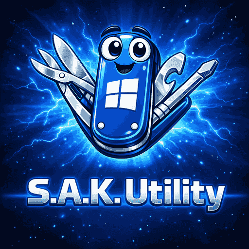
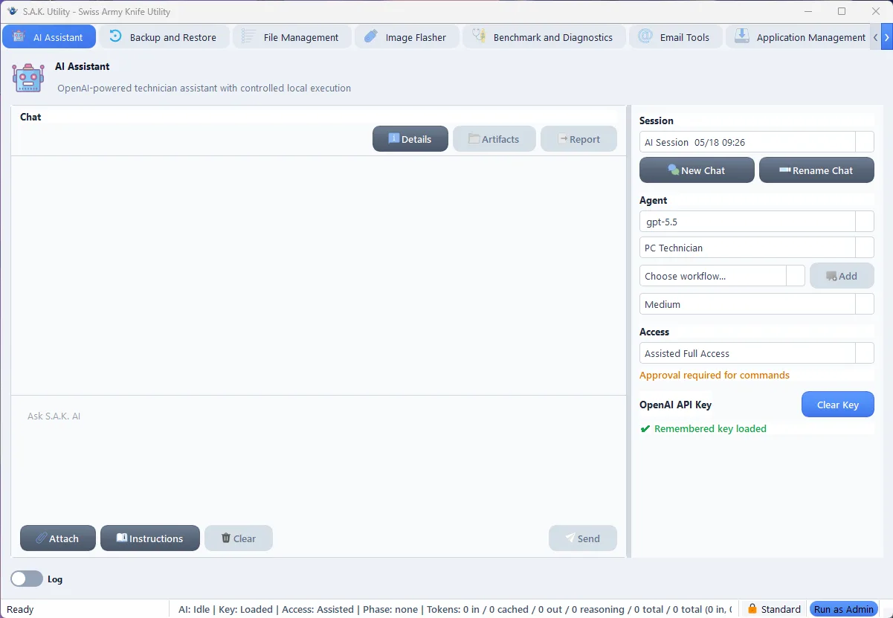

Latest Release
The Swiss Army Knife for PC Technicians
Migration · Maintenance · Recovery · Imaging · Deployment — one portable app. No installer. No dependencies. Microsoft Trusted. Just drop it on a USB stick and go.

Product Tour
See the workflows before you download
S.A.K. Utility groups technician jobs into focused panels, so the tool you need is usually one click away.
Technician assistant
Run technician jobs with S.A.K. AI
Use the OpenAI-powered assistant to perform technician workflows, attach instructions and skills, execute approved local actions, and generate artifacts or reports under explicit access controls.
- Chat workspace built for PC technician workflows
- Configurable model, persona, workflow, and reasoning effort
- Artifacts, reports, and command approval states for controlled local execution

Ready to simplify your toolkit?
Download S.A.K. Utility and carry the repair bench on a single USB stick.